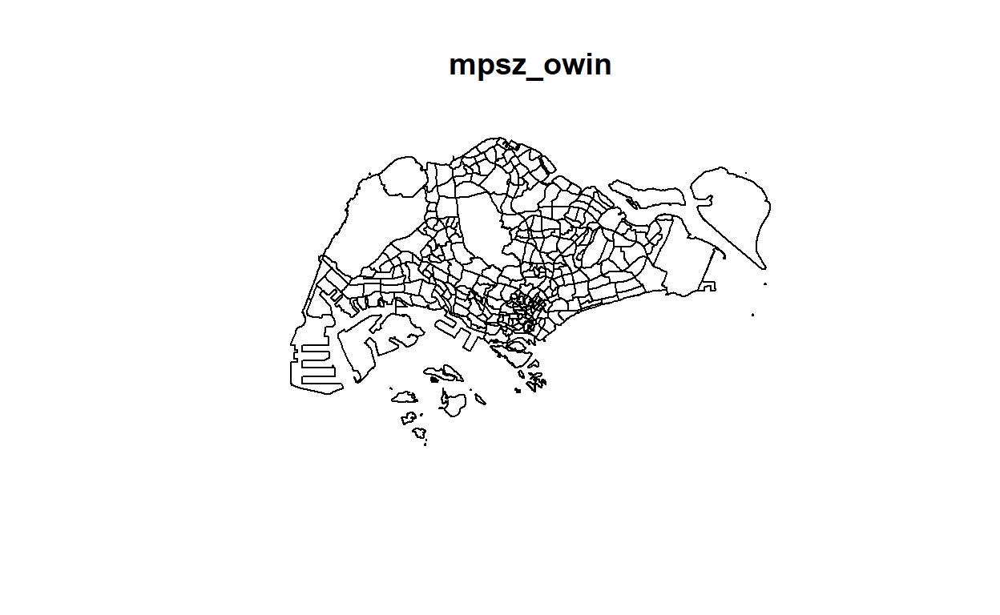
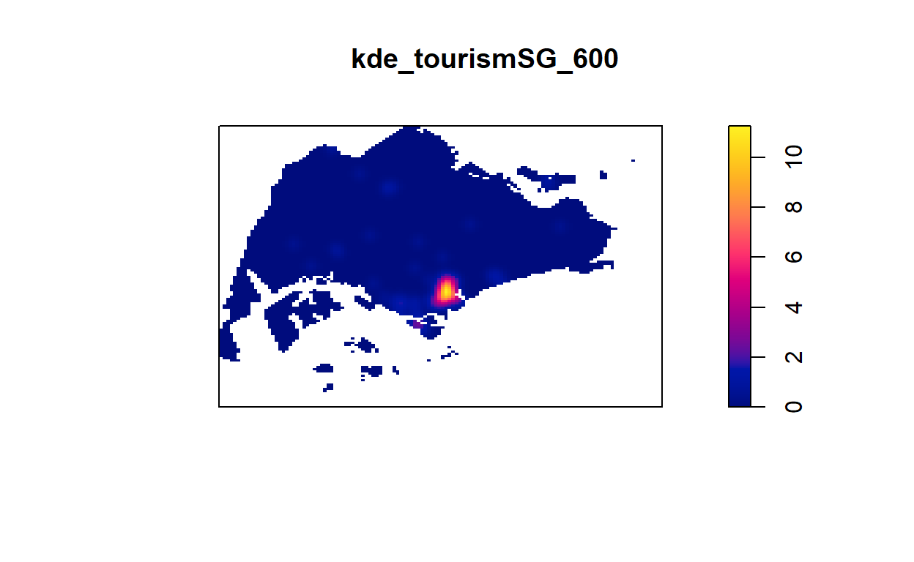

Show code
plot(sg_owin)

Analysing and Visualising the distribution of Airbnb listings in 2019 and 2021, and how Covid-19 affected the distribution.
In recent years, the emergence of numerous peer-based business models has empowered individuals across the globe to become micro-entrepreneurs, earning money from their idle property and spare time. This phenomenon, entitled ‘the sharing economy’, has seen unprecedented growth in terms of user numbers, enabling new avenues of economic and social interaction (Sundararajan, 2016).
Since its inception in 2008, Airbnb has expanded into over 34,000 cities across 191 countries. Uncommonly for a sharing economy company, Airbnb transitioned into profitability in 2016, demonstrating proof-of-concept for the validity of sharing economy within the global market (Stone & Zaleski, 2017).
Interestingly, Singapore is one of the global city that has yet to legalise short-term rentals offered by platforms such as Airbnb (Read more at https://www.todayonline.com/singapore/short-term-home-sharing-remains-illegal-singapore-airbnb-disappointed). However, during my recent visit to Inside Airbnb (http://insideairbnb.com/about.html), an independent, non-commercial set of tools and data that allows anyone to explore how Airbnb is really being used in cities around the world, it came to my attention that there are data sets for Singapore.
This analysis consist of two sections: 1) Airbnb Distribution in 2019 2) Impact of COVID-19
The following code chunk install the following packages:
packages = c('maptools', 'sf', 'raster','spatstat', 'tmap', 'tidyr', 'readr')
for (p in packages){
if(!require(p, character.only = T)){
install.packages(p)
}
library(p,character.only = T)
}
The following code uses st_read function of sf package to import MrtLrt geospatial data sets.
mrtlrt_sf <- st_read(dsn = "data/geospatial", layer="MRTLRTStnPtt")
The MrtLrt data have 185 features with 3 fields. The projected CRS is SVY21. The geometry type is in point.
Next, we use st_crs function of sf to check the CRS.
st_crs(mrtlrt_sf)
From the result above, even though the mrtlrt_sf is projected in svy21, the last line indicates that the EPSG is 9001. It is wrong because the correct EPSG code for svy21 should be 3414.
The following code chunk will assign the correct EPSG code to mrtlrt_sf using st_set_crs function of sf package
mrtlrt_sf <- st_set_crs(mrtlrt_sf, 3414)
Now that we have assign the correct EPSG code to mrtlrt_sf, we will check the CRS again using st_crs function of sf
st_crs(mrtlrt_sf)
From the result above, we have successfully assign EPSG 3414 to mrtlrt_sf.
The following code uses st_read function of sf package to import CostalOutline geospatial data sets.
sg_sf <- st_read(dsn = "data/geospatial", layer="CostalOutline")
The CostalOutline data have 60 features with 4 fields. The projected CRS is SVY21. The geometry type is polygon.
st_crs(sg_sf)
Similarly, even though the sg_sf is projected in svy21, the last line indicates that the EPSG is 9001. It is wrong because the correct EPSG code for svy21 should be 3414.
The following code chunk will assign the correct EPSG code to sg_sf using st_set_crs function of sf package
sg_sf <- st_set_crs(sg_sf, 3414)
Now that we have assign the correct EPSG code to sg_sf, we will check the CRS again using st_crs function of sf
st_crs(sg_sf)
We have successfully set the EPSG to 3414 for sg_sf.
The following code uses st_read function of sf package to import MP14_SUBZONE_WEB_PL geospatial data sets.
mpsz_sf <- st_read(dsn = "data/geospatial", layer = "MP14_SUBZONE_WEB_PL")
The mpsz data have 323 features with 15 fields. The projected CRS is SVY21. The geometry type is multipolygon.
st_crs(mpsz_sf)
Similarly, even though the mpsz_sf is projected in svy21, the last line indicates that the EPSG is 9001. It is wrong because the correct EPSG code for svy21 should be 3414.
The following code chunk will assign the correct EPSG code to mpsz_sf using st_set_crs function of sf package
mpsz_sf <- st_set_crs(mpsz_sf, 3414)
Now that we have assign the correct EPSG code to mpsz_sf, we will check the CRS again using st_crs function of sf
st_crs(mpsz_sf)
We have successfully assign ESPG 3414 to mpsz_sf.
The following code uses read_csv function of readr package to import Hotel aspatial data sets.
hotels <- read_csv("data/aspatial/hotels.csv")
The following code uses list function of base R to examine the imported file
list(hotels)
The data contains 422 rows and 9 columns. There are ‘Lat’ and ‘Lng’ column for coordinates. They are in decimal degree format, hence we will assume the data is wgs84.
We will next check if there are any NA value in ‘Lat’ and ‘Lng’ using is.na function of base R package.
We can confirmed that there are no NA values and we can proceed to create a simple feature data frame.
The following code 1. convert hotels data into simple feature data frame using st_as_sf feature of sf package. 2. ‘Lng’ and ‘Lat’ column are set as the coords arguments. 3. CRS were set as 4326 since we assumed that the data is wgs84 4. st_transform function of sf package then helps to transform the newly created simple feature data frame into svy21 5. tm_shape and tm_dots function of tmap plots the transformed hotels_sf
hotels_sf <- st_as_sf(hotels,
coords = c("Lng",
"Lat"),
crs=4326) %>%
st_transform(crs = 3414)
tm_shape(hotels_sf)+
tm_dots()
The following code uses read_csv function of readr package to import Tourism aspatial data sets.
tourism <- read_csv("data/aspatial/tourism.csv")
The following code uses list function of base R to examine the imported file
list(tourism)
The tourism data contains 107 rows and 17 columns. There are ‘LATITUDE’ and ‘LONGTITUDE’ column, as well as ‘Lat’ and ‘Lng’ coluumn for coordinates. We will be using ‘LATITUDE’ and ‘LONGTITUDE’ column since they are the same. They are in decimal degree format, hence we will assume the data is wgs84.
We will next check if there are any NA value in ‘LATITUDE’ and ‘LONGTITUDE’ using is.na function of base R package.
There are NA values and we will need to drop them before creating a simple feature data frame.
The following code chunk drop rows of data as long as the LATITUDE is NA.
tourism <- tourism %>%
drop_na("LATITUDE")
The following code 1. convert tourism data into simple feature data frame using st_as_sf feature of sf package. 2. ‘LONGTITUDE’ and ‘LATITUDE’ column are set as the coords arguments. 3. CRS were set as 4326 since we assumed that the data is wgs84 4. st_transform function of sf package then helps to transform the newly created simple feature data frame into svy21 5. tm_shape and tm_dots function of tmap plots the transformed tourism_sf
tourism_sf <- st_as_sf(tourism,
coords = c("LONGTITUDE",
"LATITUDE"),
crs=4326) %>%
st_transform(crs = 3414)
tm_shape(tourism_sf)+
tm_dots()
The following code uses read_csv function of readr package to import Airbnb listings30062019.csv aspatial data sets.
airbnb0619 <- read_csv("data/aspatial/listings30062019.csv")
The following code uses list function of base R to examine the imported file
list(airbnb0619)
The airbnb0619 data contains 8293 rows and 16 columns. There are ‘latitude’ and ‘longitude’ column for coordinates. They are in decimal degree format, hence we will assume the data is wgs84.
We will next check if there are any NA value in ‘latitude’ and ‘longitude’ using is.na function of base R package.
Since there are no NA values, we can proceed to create simple features data frame for airbnb0619
The following code 1. convert airbnb0619 data into simple feature data frame using st_as_sf feature of sf package. 2. ‘longitude’ and ‘latitude’ column are set as the coords arguments. 3. CRS were set as 4326 since we assumed that the data is wgs84 4. st_transform function of sf package then helps to transform the newly created simple feature data frame into svy21 5. tm_shape and tm_dots function of tmap plots the transformed airbnb0619_sf
airbnb0619_sf <- st_as_sf(airbnb0619,
coords = c("longitude",
"latitude"),
crs=4326) %>%
st_transform(crs = 3414)
tm_shape(airbnb0619_sf)+
tm_dots()
The following code uses read_csv function of readr package to import Airbnb listings19072021.csv aspatial data sets.
airbnb0721 <- read_csv("data/aspatial/listings19072021.csv")
The following code uses list function of base R to examine the imported file
list(airbnb0721)
The airbnb0721 data contains 4252 rows and 16 columns, lesser than airbnb0619. There are ‘latitude’ and ‘longitude’ column for coordinates. They are in decimal degree format, hence we will assume the data is wgs84.
We will next check if there are any NA value in ‘latitude’ and ‘longitude’ using is.na function of base R package.
We can confirm that there are no latitude and longitude with NA value.
The following code 1. convert airbnb0721 data into simple feature data frame using st_as_sf feature of sf package. 2. ‘longitude’ and ‘latitude’ column are set as the coords arguments. 3. CRS were set as 4326 since we assumed that the data is wgs84 4. st_transform function of sf package then helps to transform the newly created simple feature data frame into svy21 5. tm_shape and tm_dots function of tmap plots the transformed airbnb0721_sf
airbnb0721_sf <- st_as_sf(airbnb0721,
coords = c("longitude",
"latitude"),
crs=4326) %>%
st_transform(crs = 3414)
tm_shape(airbnb0721_sf)+
tm_dots()
After importing geospatial and aspatial data, we will convert the simple feature data frame to sp’s Spatial* class.
The following code chunk converts all the geospatial data from simple feature data frame to sp’s Spatial* class using as_Spatial functions of sf package.
airbnb0619 <- as_Spatial(airbnb0619_sf)
airbnb0721 <- as_Spatial(airbnb0721_sf)
hotels <- as_Spatial(hotels_sf)
tourism <- as_Spatial(tourism_sf)
mrtlrt <- as_Spatial(mrtlrt_sf)
sg <- as_Spatial(sg_sf)
mpsz <- as_Spatial(mpsz_sf)
Check each Spatial* class
airbnb0619
airbnb0721
hotels
tourism
mrtlrt
sg
mpsz
We can see that all the geospatial data are converted to their respective Spatial* Classes.
airbnb0619_sp <- as(airbnb0619, "SpatialPoints")
airbnb0721_sp <- as(airbnb0721, "SpatialPoints")
hotels_sp <- as(hotels, "SpatialPoints")
tourism_sp <- as(tourism, "SpatialPoints")
mrtlrt_sp <- as(mrtlrt, "SpatialPoints")
sg_sp <- as(sg, "SpatialPolygons")
mpsz_sp <- as(mpsz, "SpatialPolygons")
airbnb0619_ppp <- as(airbnb0619_sp, "ppp")
airbnb0721_ppp <- as(airbnb0721_sp, "ppp")
hotels_ppp <- as(hotels_sp, "ppp")
tourism_ppp <- as(tourism_sp, "ppp")
mrtlrt_ppp <- as(mrtlrt_sp, "ppp")
The following code chunk use any and duplicated function of base R package to check for duplicates, and sum up the count of duplicated points using sum function of base R package and multiplicity function of spatstat package.
=======any(duplicated(airbnb0619_ppp))
sum(multiplicity(airbnb0619_ppp) > 1)
[1] TRUEany(duplicated(airbnb0721_ppp))
sum(multiplicity(airbnb0721_ppp) > 1)
From the result above, there are 224 duplicates in airbnb0721_ppp object.
=======[1] TRUEany(duplicated(hotels_ppp))
sum(multiplicity(hotels_ppp) > 1)
[1] TRUEany(duplicated(tourism_ppp))
sum(multiplicity(tourism_ppp) > 1)
[1] TRUEany(duplicated(mrtlrt_ppp))
sum(multiplicity(mrtlrt_ppp) > 1)
From the result above, there are no duplicate in mrtlrt_ppp object.
We will use jittering to handle duplicates so that we will not lose useful points. Jittering adds a small perturbation to the duplicated points so that they do not occupy the exact same space.
The following code chunk uses rjitter function of spatstat to jitter the ppp object with duplicates.
=======[1] FALSEWe can see that …
Handling duplicates using jittering.
Jittering will add a small perturbation to the duplicate points so that they do not occupy the exact same space.
>>>>>>> parent of 950ef92 (takehome2 update)airbnb0619_ppp_jit <- rjitter(airbnb0619_ppp,
retry=TRUE,
nsim=1,
drop=TRUE)
airbnb0721_ppp_jit <- rjitter(airbnb0721_ppp,
retry=TRUE,
nsim=1,
drop=TRUE)
hotels_ppp_jit <- rjitter(hotels_ppp,
retry=TRUE,
nsim=1,
drop=TRUE)
tourism_ppp_jit <- rjitter(tourism_ppp,
retry=TRUE,
nsim=1,
drop=TRUE)
Check if duplicates still exist
any(duplicated(airbnb0619_ppp_jit))
sum(multiplicity(airbnb0619_ppp_jit) > 1)
[1] FALSEany(duplicated(airbnb0721_ppp_jit))
sum(multiplicity(airbnb0721_ppp_jit) > 1)
[1] FALSEany(duplicated(hotels_ppp_jit))
sum(multiplicity(hotels_ppp_jit) > 1)
[1] FALSEany(duplicated(tourism_ppp_jit))
sum(multiplicity(tourism_ppp_jit) > 1)
[1] FALSEsg_owin <- as(sg_sp, "owin")
mpsz_owin <- as(mpsz_sp, "owin")
plot(sg_owin)
plot(mpsz_owin)

>>>>>>> parent of 950ef92 (takehome2 update)airbnb0619SG_ppp = airbnb0619_ppp_jit[sg_owin]
airbnb0721SG_ppp = airbnb0721_ppp_jit[sg_owin]
hotelsSG_ppp = hotels_ppp_jit[sg_owin]
tourismSG_ppp = tourism_ppp_jit[sg_owin]
mrtlrtSG_ppp = mrtlrt_ppp[sg_owin]
airbnb0619SG_ppp1 = airbnb0619_ppp_jit[mpsz_owin]
airbnb0721SG_ppp1 = airbnb0721_ppp_jit[mpsz_owin]
hotelsSG_ppp1 = hotels_ppp_jit[mpsz_owin]
tourismSG_ppp1 = tourism_ppp_jit[mpsz_owin]
mrtlrtSG_ppp1 = mrtlrt_ppp[mpsz_owin]
plot(airbnb0721SG_ppp)
plot(airbnb0619SG_ppp1)
plot(mrtlrtSG_ppp)
kde_airbnb0619SG_bw <- density(airbnb0619SG_ppp,
sigma=bw.diggle,
edge=TRUE,
kernel="gaussian")
The following code chunk plots the kde_airbnb0619SG_bw using plot function of base R
plot(kde_airbnb0619SG_bw)
The density values of the output range is too small because the default unit of measurement of svy21 is in meter. As a result, the density values computed is in “number of points per square meter”.
The following code chunk rescale the KDE value of airbnb0619SG_ppp using rescale function of spatstat from meter to kilometer.
=======airbnb0619SG_ppp.km <- rescale(airbnb0619SG_ppp, 1000, "km")
<<<<<<< HEAD
The following code chunk calculate the bandwidth using different methods
bw.CvL(airbnb0619SG_ppp.km)
bw.scott(airbnb0619SG_ppp.km)
bw.ppl(airbnb0619SG_ppp.km)
bw.diggle(airbnb0619SG_ppp.km)
From the result above, since bw.diggle has the lowest sigma, we will be using it for the other ppp object in order to detect close cluster.
The following code chunk converts KDE output into grid object using as.SpatialGridDataFrame.im function of maptools, and plot the grid object using spplot function of raster package.
gridded_kde_airbnb0619SG_bw <- as.SpatialGridDataFrame.im(kde_airbnb0619SG_bw.km)
spplot(gridded_kde_airbnb0619SG_bw)
The following code chunk converts grid object into raster using raster function of raster package
kde_airbnb0619SG_bw_raster <- raster(gridded_kde_airbnb0619SG_bw)
kde_airbnb0619SG_bw_raster
From the result above, the crs is NA
The following code chunk assign CRS to kde_airbnb0619SG_bw_raster
projection(kde_airbnb0619SG_bw_raster) <- CRS("+init=EPSG:3414")
kde_airbnb0619SG_bw_raster
The following code chunk rescale the KDE value of hotelsSG_ppp using rescale function of spatstat from meter to kilometer.
======= kde_airbnb0619SG_600 <- density(airbnb0619SG_ppp.km, sigma=0.6, edge=TRUE, kernel="gaussian") plot(kde_airbnb0619SG_600)
hotelsSG_ppp.km <- rescale(hotelsSG_ppp, 1000, "km")
The following code chunk converts KDE output into grid object using as.SpatialGridDataFrame.im function of maptools, and plot the grid object using spplot function of raster package.
gridded_kde_hotelsSG_bw <- as.SpatialGridDataFrame.im(kde_hotelsSG_bw.km)
spplot(gridded_kde_hotelsSG_bw)
The following code chunk converts grid object into raster using raster function of raster package
kde_hotelsSG_bw_raster <- raster(gridded_kde_hotelsSG_bw)
projection(kde_hotelsSG_bw_raster) <- CRS("+init=EPSG:3414")
kde_hotelsSG_bw_raster
The following code chunk rescale the KDE value of mrtlrtSG_ppp using rescale function of spatstat from meter to kilometer.
mrtlrtSG_ppp.km <- rescale(mrtlrtSG_ppp, 1000, "km")
kde_mrtlrtSG_bw.km <- density(mrtlrtSG_ppp.km,
=======
airbnb0721SG_ppp.km <- rescale(airbnb0721SG_ppp, 1000, "km")
kde_airbnb0721SG_ppp_bw <- density(airbnb0721SG_ppp.km,
>>>>>>> parent of 950ef92 (takehome2 update)
sigma=bw.diggle,
edge=TRUE,
kernel="gaussian")
<<<<<<< HEAD
par(mfrow=c(1,2))
plot(kde_mrtlrtSG_bw.km, main = "KDE Map")
plot(mrtlrtSG_ppp, main="Point Map")
The following code chunk converts KDE output into grid object using as.SpatialGridDataFrame.im function of maptools, and plot the grid object using spplot function of raster package.
gridded_kde_mrtlrtSG_bw <- as.SpatialGridDataFrame.im(kde_mrtlrtSG_bw.km)
spplot(gridded_kde_mrtlrtSG_bw)
The following code chunk converts grid object into raster using raster function of raster package
kde_mrtlrtSG_bw_raster <- raster(gridded_kde_mrtlrtSG_bw)
projection(kde_mrtlrtSG_bw_raster) <- CRS("+init=EPSG:3414")
kde_mrtlrtSG_bw_raster
The following code chunk rescale the KDE value of mrtlrtSG_ppp using rescale function of spatstat from meter to kilometer.
tourismSG_ppp.km <- rescale(tourismSG_ppp, 1000, "km")
=======
plot(kde_airbnb0721SG_ppp_bw)
>>>>>>> parent of 950ef92 (takehome2 update)
The following code chunk converts KDE output into grid object using as.SpatialGridDataFrame.im function of maptools, and plot the grid object using spplot function of raster package.
gridded_kde_tourismSG_bw <- as.SpatialGridDataFrame.im(kde_tourismSG_bw.km)
spplot(gridded_kde_tourismSG_bw)
The following code chunk converts grid object into raster using raster function of raster package
kde_tourismSG_bw_raster <- raster(gridded_kde_tourismSG_bw)
projection(kde_tourismSG_bw_raster) <- CRS("+init=EPSG:3414")
kde_tourismSG_bw_raster
The following code chunk plots all the KDE map of Airbnb0619, Hotels, MRTLRT and Tourist Attractions side by side using par functions of graphics package
From the above, we can see that the higher density (in red and yellow) for airbnb, hotel, mrt and tourish attraction are concentrated around the south east area below central region.
We will look into the central region
The following code chunk first extract airbnb in the central region from airbnb0619_sf region.
tmap_mode is set to “view” for interaction mode and tm_basemap is set to “OpenStreetMap”
tm_shape of centralairbnb0619, hotels_sf, mrtlrt_sf and tourism_sf were plotted using tm_shape and tm_dots of tmap packages.
colour of dots using tm_dots and the following are the color representation:
black: Airbnb listings in central region
green: hotels
blue: mrtlrt
red: tourist attractions.
centralairbnb0619 <- airbnb0619_sf[airbnb0619_sf$neighbourhood_group == "Central Region",]
tmap_mode("view")
tm_basemap("OpenStreetMap") +
tm_shape(centralairbnb0619) +
tm_dots(col="black", size = 0.02)+
tm_shape(hotels_sf) +
tm_dots(col="green", size = 0.02)+
tm_shape(mrtlrt_sf) +
tm_dots(col="blue", size = 0.02)+
tm_shape(tourism_sf) +
tm_dots(col="red", size = 0.02)
From the map above, we can see that there are many Airbnbs located in Kallang, River Valley, Novena an Rochor.
tmap_mode("plot")
Extract Study Area
The following code chunk extracts the target areas.
kl = mpsz[mpsz@data$PLN_AREA_N == "KALLANG",]
rv = mpsz[mpsz@data$PLN_AREA_N == "RIVER VALLEY",]
nv = mpsz[mpsz@data$PLN_AREA_N == "NOVENA",]
rc = mpsz[mpsz@data$PLN_AREA_N == "ROCHOR",]
Plot target areas
The following code chunk plots the target areas side by side in 2x2 using par function of graphics package and plot functions of base R package.
Convert Spatial Polygons Data Fraeme into generic SP format
The following code chunk converts the four SpatialPolygonsDataFrame layers into generic spatialpolygons layers.
kl_sp = as(kl, "SpatialPolygons")
rv_sp = as(rv, "SpatialPolygons")
nv_sp = as(nv, "SpatialPolygons")
rc_sp = as(rc, "SpatialPolygons")
Create owin object for each target area
The following code chunk converst the SpatialPolygons objects into owin objects required by spatstat.
kl_owin = as(kl_sp, "owin")
rv_owin = as(rv_sp, "owin")
nv_owin = as(nv_sp, "owin")
rc_owin = as(rc_sp, "owin")
Combine airnbnb0619, hotels, mrt, tourist attractions points with owin of each target area
The following code chunk extracts airnbnb0619, hotels, mrt and tourist attractions within each specific region.
airbnb0619_kl_ppp = airbnb0619_ppp_jit[kl_owin]
airbnb0619_rv_ppp = airbnb0619_ppp_jit[rv_owin]
airbnb0619_nv_ppp = airbnb0619_ppp_jit[nv_owin]
airbnb0619_rc_ppp = airbnb0619_ppp_jit[rc_owin]
hotels_kl_ppp = hotels_ppp_jit[kl_owin]
hotels_rv_ppp = hotels_ppp_jit[rv_owin]
hotels_nv_ppp = hotels_ppp_jit[nv_owin]
hotels_rc_ppp = hotels_ppp_jit[rc_owin]
mrtlrt_kl_ppp = mrtlrt_ppp[kl_owin]
mrtlrt_rv_ppp = mrtlrt_ppp[rv_owin]
mrtlrt_nv_ppp = mrtlrt_ppp[nv_owin]
mrtlrt_rc_ppp = mrtlrt_ppp[rc_owin]
tourism_kl_ppp = tourism_ppp_jit[kl_owin]
tourism_rv_ppp = tourism_ppp_jit[rv_owin]
tourism_nv_ppp = tourism_ppp_jit[nv_owin]
tourism_rc_ppp = tourism_ppp_jit[rc_owin]
Rescale from m to km
The following code chunk transform the unit from m to km using rescale function.
airbnb0619_kl_ppp.km = rescale(airbnb0619_kl_ppp, 1000, "km")
airbnb0619_rv_ppp.km = rescale(airbnb0619_rv_ppp, 1000, "km")
airbnb0619_nv_ppp.km = rescale(airbnb0619_nv_ppp, 1000, "km")
airbnb0619_rc_ppp.km = rescale(airbnb0619_rc_ppp, 1000, "km")
hotels_kl_ppp.km = rescale(hotels_kl_ppp, 1000, "km")
hotels_rv_ppp.km = rescale(hotels_rv_ppp, 1000, "km")
hotels_nv_ppp.km = rescale(hotels_nv_ppp, 1000, "km")
hotels_rc_ppp.km = rescale(hotels_rc_ppp, 1000, "km")
mrtlrt_kl_ppp.km = rescale(mrtlrt_kl_ppp, 1000, "km")
mrtlrt_rv_ppp.km = rescale(mrtlrt_rv_ppp, 1000, "km")
mrtlrt_nv_ppp.km = rescale(mrtlrt_nv_ppp, 1000, "km")
mrtlrt_rc_ppp.km = rescale(mrtlrt_rc_ppp, 1000, "km")
tourism_kl_ppp.km = rescale(tourism_kl_ppp, 1000, "km")
tourism_rv_ppp.km = rescale(tourism_rv_ppp, 1000, "km")
tourism_nv_ppp.km = rescale(tourism_nv_ppp, 1000, "km")
tourism_rc_ppp.km = rescale(tourism_rc_ppp, 1000, "km")
Airbnb comparison by neighbourhood
The following code chunk plots airbnb within each neigbourhood using plot and density functions with sigma set to bw.diggle and kernel set to gaussian.
par(mfrow=c(2,2))
plot(density(airbnb0619_kl_ppp.km,
sigma=bw.diggle,
edge=TRUE,
kernel="gaussian"),
main="Kallang")
plot(density(airbnb0619_rv_ppp.km,
sigma=bw.diggle,
edge=TRUE,
kernel="gaussian"),
main="River Valley")
plot(density(airbnb0619_nv_ppp.km,
sigma=bw.diggle,
edge=TRUE,
kernel="gaussian"),
main="Novena")
plot(density(airbnb0619_rc_ppp.km,
sigma=bw.diggle,
edge=TRUE,
kernel="gaussian"),
main="Rochor")
Analysis:
Comparison within Kallang
The following code chunk plots airbnb, hotel, mrt and tourist attraction in Kallang.
Analysis: Even though there are no tourist attraction and hotels, there are still many airbnb in Kallang. There are a few MRT stations in Kallang, which may be the reason to the large number of airbnb.
Comparison within River Valley
The following code chunk plots airbnb, hotel, mrt and tourist attraction in River Valley.
Analysis: Even though there are no tourist attraction and Mrt in River Valley, there are still many airbnb. There are only one hotel and it may be the reason for the large number of airbnb in the area.
Comparison within Novena
The following code chunk plots airbnb, hotel, mrt and tourist attraction in Novena.
=======hotels_ppp.km <- rescale(hotelsSG_ppp, 1000, "km")
kde_hotelsSG_600 <- density(hotels_ppp.km, sigma=0.6, edge=TRUE, kernel="gaussian")
plot(kde_hotelsSG_600)

Analysis: Even though there are a few hotel in Novena, the number of airbnb are large. The accessibility of the two MRT and one tourist attraction can be the reason to the large number of airbnb in Novena.
Comparison within Rochor
The following code chunk plots airbnb, hotel, mrt and tourist attraction in Rochor.
=======mrtlrt_ppp.km <- rescale(mrtlrtSG_ppp, 1000, "km")
kde_mrtlrtSG_600 <- density(mrtlrt_ppp.km, sigma=0.6, edge=TRUE, kernel="gaussian")
plot(kde_mrtlrtSG_600)

Analysis: In Rochor, there are still many airbnb even though many hotels are already available. The accessilibty to a few MRTs and tourist attractions may be the reason that leads to a large number of airbnb in Rochor.
Overall, we can conclude that there are no direct relationship between airbnb and hotel, mrt and tourist attraction.
we will perform the Clark-Evans test of aggregation for a spatial point pattern by using clarkevans.test() of statspat.
Test Hypothesis:
H0 = The distribution of airbnb are randomly distributed.
H1 = The distribution of airbnb are not randomly distributed.
The 95% confident interval will be used.
clarkevans.test(airbnb0619SG_ppp,
correction="none",
clipregion="sg_owin",
alternative=c("clustered"),
nsim=99)
Clark-Evans test No edge correction Monte Carlo test based on 99 simulations of CSR with fixed n
data: airbnb0619SG_ppp R = 0.36169, p-value = 0.01 alternative hypothesis: clustered (R < 1)
clarkevans.test(airbnb0619_kl_ppp,
correction="none",
clipregion=NULL,
alternative=c("two.sided"),
nsim=999)
Analysis:
clarkevans.test(airbnb0619_rv_ppp,
correction="none",
clipregion=NULL,
alternative=c("two.sided"),
nsim=999)
Analysis:
clarkevans.test(airbnb0619_nv_ppp,
correction="none",
clipregion=NULL,
alternative=c("two.sided"),
nsim=999)
Analysis:
clarkevans.test(airbnb0619_rc_ppp,
correction="none",
clipregion=NULL,
alternative=c("two.sided"),
nsim=999)
Analysis:
The following code chunk rescale the KDE value of airbnb0721SG_ppp using rescale function of spatstat from meter to kilometer.
airbnb0721SG_ppp.km <- rescale(airbnb0721SG_ppp, 1000, "km")
The following code chunk converts KDE output into grid object using as.SpatialGridDataFrame.im function of maptools, and plot the grid object using spplot function of raster package.
gridded_kde_airbnb0721SG_bw <- as.SpatialGridDataFrame.im(kde_airbnb0721SG_bw.km)
spplot(gridded_kde_airbnb0721SG_bw)
The following code chunk converts grid object into raster using raster function of raster package
kde_airbnb0721SG_bw_raster <- raster(gridded_kde_airbnb0721SG_bw)
projection(kde_airbnb0721SG_bw_raster) <- CRS("+init=EPSG:3414")
kde_airbnb0721SG_bw_raster
From the KDE map, the south-east region still have higher density in 2021. However, we notice the density of Airbnb have reduced as seen from the scale. It reduced from range 0-1500 in 2019 to range 0-1000 in 2021. We can conclude that Covid-19 did impact the Airbnb listing in Singapore from 2019 to 2021.
The following code checks the unique room type using unique features of base R
unique(airbnb0619_sf$room_type)
We have determined that the unique room types are Private room, Entire home/apt and Shared room for Airbnb 2021.
unique(airbnb0721_sf$room_type)
We have determined that the unique room types are Private room, Entire home/apt, Shared room and Hotel room for Airbnb 2021.
airbnb0619_pte = airbnb0619[airbnb0619@data$room_type == "Private room",]
airbnb0619_ent = airbnb0619[airbnb0619@data$room_type == "Entire home/apt",]
airbnb0619_sh = airbnb0619[airbnb0619@data$room_type == "Shared room",]
airbnb0721_pte = airbnb0721[airbnb0721@data$room_type == "Private room",]
airbnb0721_ent = airbnb0721[airbnb0721@data$room_type == "Entire home/apt",]
airbnb0721_sh = airbnb0721[airbnb0721@data$room_type == "Shared room",]
airbnb0721_ht = airbnb0721[airbnb0721@data$room_type == "Hotel room",]
airbnb0721_sh
Notice that the data are in SpatialPointsData Frame format
Next, we will convert Spatial* classes into Spatial object so that we can convert it into ppp object.
The following code chunk converts Spatial* classes into generic sp format using as function which sets the classes to their respective sp format.
airbnb0619_pte_sp <- as(airbnb0619_pte, "SpatialPoints")
airbnb0619_ent_sp <- as(airbnb0619_ent, "SpatialPoints")
airbnb0619_sh_sp <- as(airbnb0619_sh, "SpatialPoints")
airbnb0721_pte_sp <- as(airbnb0721_pte, "SpatialPoints")
airbnb0721_ent_sp <- as(airbnb0721_ent, "SpatialPoints")
airbnb0721_sh_sp <- as(airbnb0721_sh, "SpatialPoints")
airbnb0721_ht_sp <- as(airbnb0721_ht, "SpatialPoints")
We will next convert the spatial data into spatstat’s ppp format.
The following code chunk converts spatial data into spatstat’s ppp format using as function.
airbnb0619_pte_ppp <- as(airbnb0619_pte_sp, "ppp")
airbnb0619_ent_ppp <- as(airbnb0619_ent_sp, "ppp")
airbnb0619_sh_ppp <- as(airbnb0619_sh_sp, "ppp")
airbnb0721_pte_ppp <- as(airbnb0721_pte_sp, "ppp")
airbnb0721_ent_ppp <- as(airbnb0721_ent_sp, "ppp")
airbnb0721_sh_ppp <- as(airbnb0721_sh_sp, "ppp")
airbnb0721_ht_ppp <- as(airbnb0721_ht_sp, "ppp")
The following code chunk use any and duplicated function of base R package to check for duplicates, and sum up the count of duplicated points using sum function of base R package and multiplicity function of spatstat package.
any(duplicated(airbnb0619_pte_ppp))
sum(multiplicity(airbnb0619_pte_ppp) > 1)
any(duplicated(airbnb0619_ent_ppp))
sum(multiplicity(airbnb0619_ent_ppp) > 1)
any(duplicated(airbnb0619_sh_ppp))
sum(multiplicity(airbnb0619_sh_ppp) > 1)
any(duplicated(airbnb0721_pte_ppp))
sum(multiplicity(airbnb0721_pte_ppp) > 1)
any(duplicated(airbnb0721_ent_ppp))
sum(multiplicity(airbnb0721_ent_ppp) > 1)
any(duplicated(airbnb0721_sh_ppp))
sum(multiplicity(airbnb0721_sh_ppp) > 1)
any(duplicated(airbnb0721_ht_ppp))
sum(multiplicity(airbnb0721_ht_ppp) > 1)
We will use jittering to handle duplicates so that we will not lose useful points. Jittering adds a small perturbation to the duplicated points so that they do not occupy the exact same space.
The following code chunk uses rjitter function of spatstat to jitter the ppp object with duplicates.
airbnb0619_ent_ppp_jit <- rjitter(airbnb0619_ent_ppp,
retry=TRUE,
nsim=1,
drop=TRUE)
airbnb0619_sh_ppp_jit <- rjitter(airbnb0619_sh_ppp,
retry=TRUE,
nsim=1,
drop=TRUE)
airbnb0721_pte_ppp_jit <- rjitter(airbnb0721_pte_ppp,
retry=TRUE,
nsim=1,
drop=TRUE)
airbnb0721_ent_ppp_jit <- rjitter(airbnb0721_ent_ppp,
retry=TRUE,
nsim=1,
drop=TRUE)
airbnb0721_sh_ppp_jit <- rjitter(airbnb0721_sh_ppp,
retry=TRUE,
nsim=1,
drop=TRUE)
airbnb0721_ht_ppp_jit <- rjitter(airbnb0721_ht_ppp,
retry=TRUE,
nsim=1,
drop=TRUE)
any(duplicated(airbnb0619_ent_ppp_jit))
sum(multiplicity(airbnb0619_ent_ppp_jit) > 1)
any(duplicated(airbnb0619_sh_ppp_jit))
sum(multiplicity(airbnb0619_sh_ppp_jit) > 1)
any(duplicated(airbnb0721_pte_ppp_jit))
sum(multiplicity(airbnb0721_pte_ppp_jit) > 1)
any(duplicated(airbnb0721_ent_ppp_jit))
sum(multiplicity(airbnb0721_ent_ppp_jit) > 1)
any(duplicated(airbnb0721_sh_ppp_jit))
sum(multiplicity(airbnb0721_sh_ppp_jit) > 1)
any(duplicated(airbnb0721_ht_ppp_jit))
sum(multiplicity(airbnb0721_ht_ppp_jit) > 1)
We can confirm that there are no duplicated points after jittering.
The following code chunk combines the point objects with the owin object into one ppp object class.
airbnb0619SG_pte_ppp = airbnb0619_pte_ppp[sg_owin]
airbnb0619SG_ent_ppp = airbnb0619_ent_ppp_jit[sg_owin]
airbnb0619SG_sh_ppp = airbnb0619_sh_ppp_jit[sg_owin]
airbnb0721SG_pte_ppp = airbnb0721_pte_ppp_jit[sg_owin]
airbnb0721SG_ent_ppp = airbnb0721_ent_ppp_jit[sg_owin]
airbnb0721SG_sh_ppp = airbnb0721_sh_ppp_jit[sg_owin]
airbnb0721SG_ht_ppp = airbnb0721_ht_ppp_jit[sg_owin]
The following code chunk rescale the KDE value of mrtlrtSG_ppp using rescale function of spatstat from meter to kilometer.
airbnb0619SG_pte_ppp.km <- rescale(airbnb0619SG_pte_ppp, 1000, "km")
airbnb0619SG_ent_ppp.km <- rescale(airbnb0619SG_ent_ppp, 1000, "km")
airbnb0619SG_sh_ppp.km <- rescale(airbnb0619SG_sh_ppp, 1000, "km")
airbnb0721SG_pte_ppp.km <- rescale(airbnb0721SG_pte_ppp, 1000, "km")
airbnb0721SG_ent_ppp.km <- rescale(airbnb0721SG_ent_ppp, 1000, "km")
airbnb0721SG_sh_ppp.km <- rescale(airbnb0721SG_sh_ppp, 1000, "km")
airbnb0721SG_ht_ppp.km <- rescale(airbnb0721SG_ht_ppp, 1000, "km")
kde_airbnb0619SG_pte_bw.km <- density(airbnb0619SG_pte_ppp.km,
sigma=bw.diggle,
edge=TRUE,
kernel="gaussian")
kde_airbnb0619SG_ent_bw.km <- density(airbnb0619SG_ent_ppp.km,
sigma=bw.diggle,
edge=TRUE,
kernel="gaussian")
kde_airbnb0619SG_sh_bw.km <- density(airbnb0619SG_sh_ppp.km,
sigma=bw.diggle,
edge=TRUE,
kernel="gaussian")
kde_airbnb0721SG_pte_bw.km <- density(airbnb0721SG_pte_ppp.km,
sigma=bw.diggle,
edge=TRUE,
kernel="gaussian")
kde_airbnb0721SG_ent_bw.km <- density(airbnb0721SG_ent_ppp.km,
sigma=bw.diggle,
edge=TRUE,
kernel="gaussian")
kde_airbnb0721SG_sh_bw.km <- density(airbnb0721SG_sh_ppp.km,
sigma=bw.diggle,
edge=TRUE,
kernel="gaussian")
kde_airbnb0721SG_ht_bw.km <- density(airbnb0721SG_ht_ppp.km,
sigma=bw.diggle,
edge=TRUE,
kernel="gaussian")
The following code chunk converts KDE output into grid object using as.SpatialGridDataFrame.im function of maptools
gridded_kde_airbnb0619SG_pte_bw <- as.SpatialGridDataFrame.im(kde_airbnb0619SG_pte_bw.km)
gridded_kde_airbnb0619SG_ent_bw <- as.SpatialGridDataFrame.im(kde_airbnb0619SG_ent_bw.km)
gridded_kde_airbnb0619SG_sh_bw <- as.SpatialGridDataFrame.im(kde_airbnb0619SG_sh_bw.km)
gridded_kde_airbnb0721SG_pte_bw <- as.SpatialGridDataFrame.im(kde_airbnb0721SG_pte_bw.km)
gridded_kde_airbnb0721SG_ent_bw <- as.SpatialGridDataFrame.im(kde_airbnb0721SG_ent_bw.km)
gridded_kde_airbnb0721SG_sh_bw <- as.SpatialGridDataFrame.im(kde_airbnb0721SG_sh_bw.km)
gridded_kde_airbnb0721SG_ht_bw <- as.SpatialGridDataFrame.im(kde_airbnb0721SG_ht_bw.km)
The following code chunk converts grid object into raster using raster function of raster package
kde_airbnb0619SG_pte_bw_raster <- raster(gridded_kde_airbnb0619SG_pte_bw)
projection(kde_airbnb0619SG_pte_bw_raster) <- CRS("+init=EPSG:3414")
kde_airbnb0619SG_ent_bw_raster <- raster(gridded_kde_airbnb0619SG_ent_bw)
projection(kde_airbnb0619SG_ent_bw_raster) <- CRS("+init=EPSG:3414")
kde_airbnb0619SG_sh_bw_raster <- raster(gridded_kde_airbnb0619SG_sh_bw)
projection(kde_airbnb0619SG_sh_bw_raster) <- CRS("+init=EPSG:3414")
kde_airbnb0721SG_pte_bw_raster <- raster(gridded_kde_airbnb0721SG_pte_bw)
projection(kde_airbnb0721SG_pte_bw_raster) <- CRS("+init=EPSG:3414")
kde_airbnb0721SG_ent_bw_raster <- raster(gridded_kde_airbnb0721SG_ent_bw)
projection(kde_airbnb0721SG_ent_bw_raster) <- CRS("+init=EPSG:3414")
kde_airbnb0721SG_sh_bw_raster <- raster(gridded_kde_airbnb0721SG_sh_bw)
projection(kde_airbnb0721SG_sh_bw_raster) <- CRS("+init=EPSG:3414")
kde_airbnb0721SG_ht_bw_raster <- raster(gridded_kde_airbnb0721SG_ht_bw)
projection(kde_airbnb0721SG_ht_bw_raster) <- CRS("+init=EPSG:3414")
The following code chunks plot KDE map of Airbnb 2019 and 2021 by each room types side by side.
Analysis: There is a slight decrease in private room airbnb from 2019 to 2021 as seen in 2021 that there are lesser red point. The scale of 2019 to 2021 descreased slightly.
Analysis: The map shows high density of airbnb in south-east region near central for both 2019 and 2021 as seen from the red marks on both map. However, there is a huge decrease in the number of Entire Home/Apt airbnb from 2019 to 2021 as seen on the scale. It decreased from 0-1000 in 2019 to 0-250 in 2021.
Analysis: The map shows high density of airbnb in south-east region near central for both 2019 and 2021 as seen from the red marks on both map. However, there is a significant decrease in the number of Shared Room from 2019 to 2021 as seen on the scale. It ranges from 0-400 in 2019 and decrease to 0-80 in 2021.
plot(kde_airbnb0721SG_ht_bw.km, main = "Airbnb 2021 Hotel Room")
Analyis: Hotel room is a new room type in 2021.
Overall, we can conclude that Covid-19 are likely to have impact on the type of Airbnb room listed in Singapore from 2019 to 2021. It is seen from the significant decrease in Entire Home/Apt and Shared Room type, and this is likely because the owner do not wish to rent out the house anymore, or that there are lesser to no tourist. In addition, there is a new room type which is the Hotel Room, and this because hotel are required for quarantine purpose.
tmap_mode("view")
airbnb0619map <- tm_basemap("OpenStreetMap")+
tm_shape(airbnb0619_sf) +
tm_dots(col = 'room_type', palette=c(entire='blue', private='red', shared='green'), size = 0.02)
airbnb0721map <- tm_basemap("OpenStreetMap")+
tm_shape(airbnb0721_sf) +
tm_dots(col = 'room_type', palette=c(entire='blue', hotel='yellow', private='red', shared='green'), size = 0.02)
tmap_arrange(airbnb0619map, airbnb0721map)
tmap_mode("plot")
we will perform the Clark-Evans test of aggregation for a spatial point pattern by using clarkevans.test() of statspat.
Test Hypothesis:
H0 = The distribution of airbnb are randomly distributed.
H1 = The distribution of airbnb are not randomly distributed.
The 95% confident interval will be used.
clarkevans.test(airbnb0619SG_ppp,
correction="none",
clipregion="sg_owin",
alternative=c("clustered"),
nsim=99)
Clark-Evans test No edge correction Monte Carlo test based on 99 simulations of CSR with fixed n
data: airbnb0619SG_ppp R = 0.36169, p-value = 0.01 alternative hypothesis: clustered (R < 1)
clarkevans.test(airbnb0619_kl_ppp,
correction="none",
clipregion=NULL,
alternative=c("two.sided"),
nsim=999)
Analysis:
clarkevans.test(airbnb0619_rv_ppp,
correction="none",
clipregion=NULL,
alternative=c("two.sided"),
nsim=999)
Analysis:
clarkevans.test(airbnb0619_nv_ppp,
correction="none",
clipregion=NULL,
alternative=c("two.sided"),
nsim=999)
Analysis:
clarkevans.test(airbnb0619_rc_ppp,
correction="none",
clipregion=NULL,
alternative=c("two.sided"),
nsim=999)
Analysis:
TBC… NOT SURE ### 5.1.2 Kernel density maps analysis on Openstreetmap of Singapore to see possible relationship
tmap_mode("plot")
Airbnb0619 and Hotel
airbnb0619map <- tm_shape(kde_airbnb0619SG_bw_raster) +
tm_raster("v", palette="Purples", colorNA = NULL) +
tm_basemap("OpenStreetMap")
hotelsmap <- tm_shape(kde_hotelsSG_bw_raster) +
tm_raster("v", palette="Purples", colorNA = NULL, showNA = NA) +
tm_basemap("OpenStreetMap")
tmap_arrange(airbnb0619map, hotelsmap)
Airbnb0619 and MrtLrt
airbnb0619map <- tm_shape(kde_airbnb0619SG_bw_raster) +
tm_raster("v", palette="Purples", colorNA = NULL) +
tm_basemap("OpenStreetMap")
mrtlrtmap <- tm_shape(kde_mrtlrtSG_bw_raster) +
tm_raster("v", palette="Purples", colorNA = NULL, showNA = NA) +
tm_basemap("OpenStreetMap")
tmap_arrange(airbnb0619map, mrtlrtmap)
Airbnb0619 and Tourist Attractions
airbnb0619map <- tm_shape(kde_airbnb0619SG_bw_raster) +
tm_raster("v", palette="Purples", colorNA = NULL) +
tm_basemap("OpenStreetMap")
tourismmap <- tm_shape(kde_tourismSG_bw_raster) +
tm_raster("v", palette="Purples", colorNA = NULL, showNA = NA) +
tm_basemap("OpenStreetMap")
tmap_arrange(airbnb0619map, tourismmap)
tmap_mode("plot")
tourism_ppp.km <- rescale(tourismSG_ppp, 1000, "km")
kde_tourismSG_600 <- density(tourism_ppp.km, sigma=0.6, edge=TRUE, kernel="gaussian")
plot(kde_tourismSG_600)
